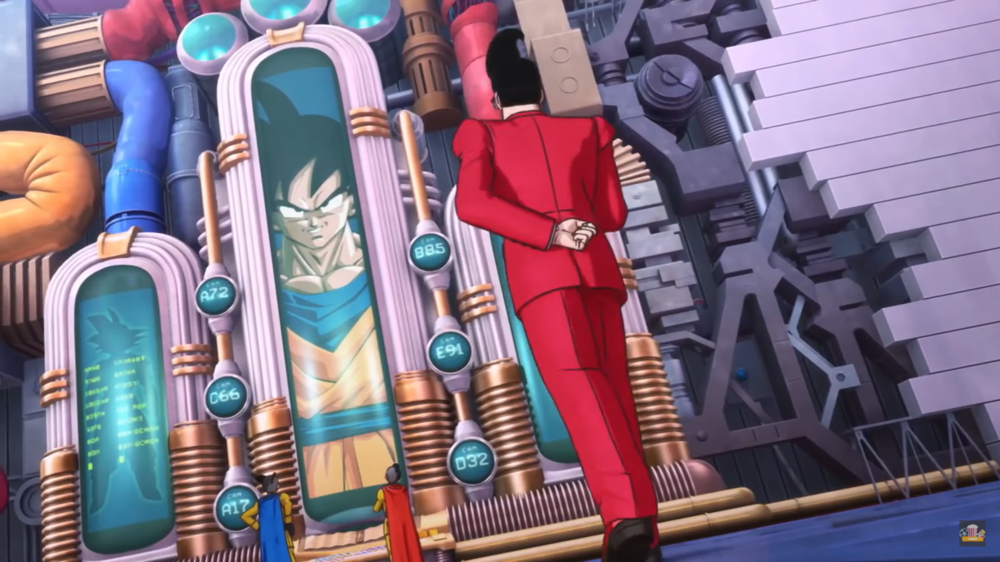
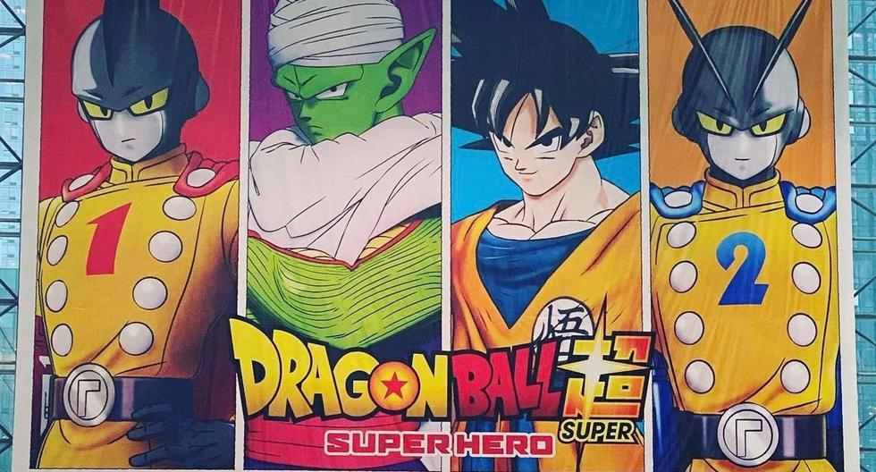
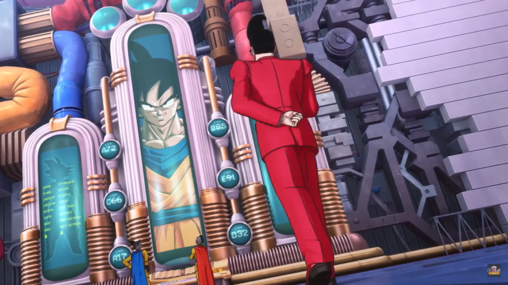
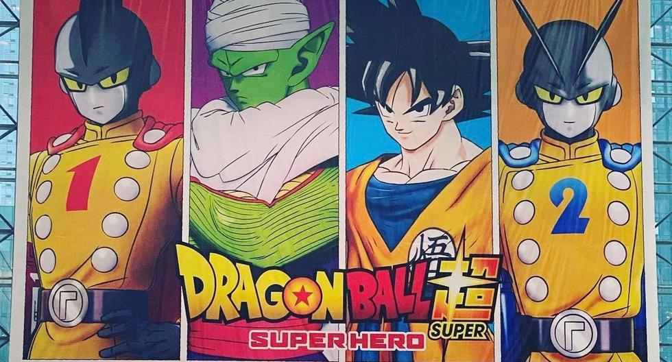

Noticias
Hace unos días se conoció que un hackeo había afectado a Toei Animation, producto de lo
cual se estaba posponiendo el estreno de varios anime. Ahora se ha dado a conocer que la
situación no sólo afectó a las series de anime, ya que la película Dragon Ball Super:
Super Hero ha pospuesto su estreno de forma indefinida debido al ataque.
La nueva película de la franquicia, tenía programado su estreno para el próximo 22 de
abril en Japón y en las semanas siguientes iniciaría un lanzamiento en varios
mercados adicionales.
A través de un comunicado, desde la compañía informaron que: “Como se anunció
anteriormente, Toei Animation, la empresa productora de la película Dragon Ball
Super: Super Hero, que estaba programada para estrenarse el 22 de Abril
(dentro de Japón), experimentó un acceso no autorizado a sus redes por parte de
terceros, lo que hace difícil la producción de la película. Como resultado, no
tenemos más remedio que postergar su estreno”.
Además agregaron que: “Nos disculpamos con aquellos que esperan con ansias el
lanzamiento de la película. Anunciaremos una nueva fecha de estreno en el futuro
cercano. Gracias por su comprensión.”.
Las entradas del filme ya estaban a la venta en el país asiático e informaron que estas
serán válidas para la nueva fecha de estreno, independiente de cuando sea esto.
 


